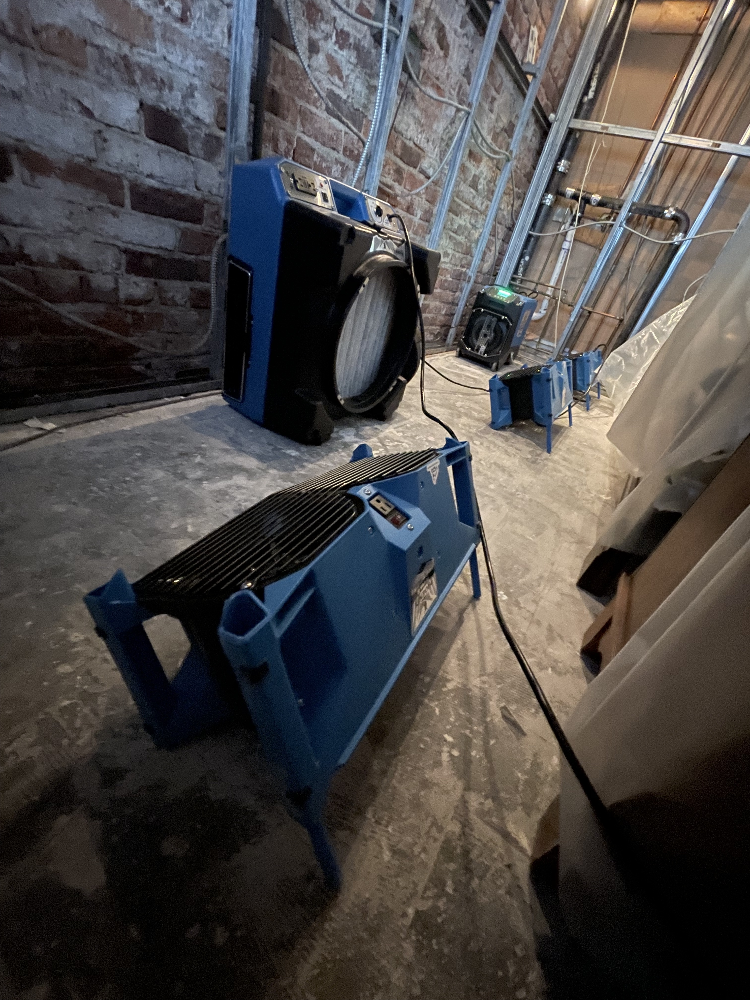
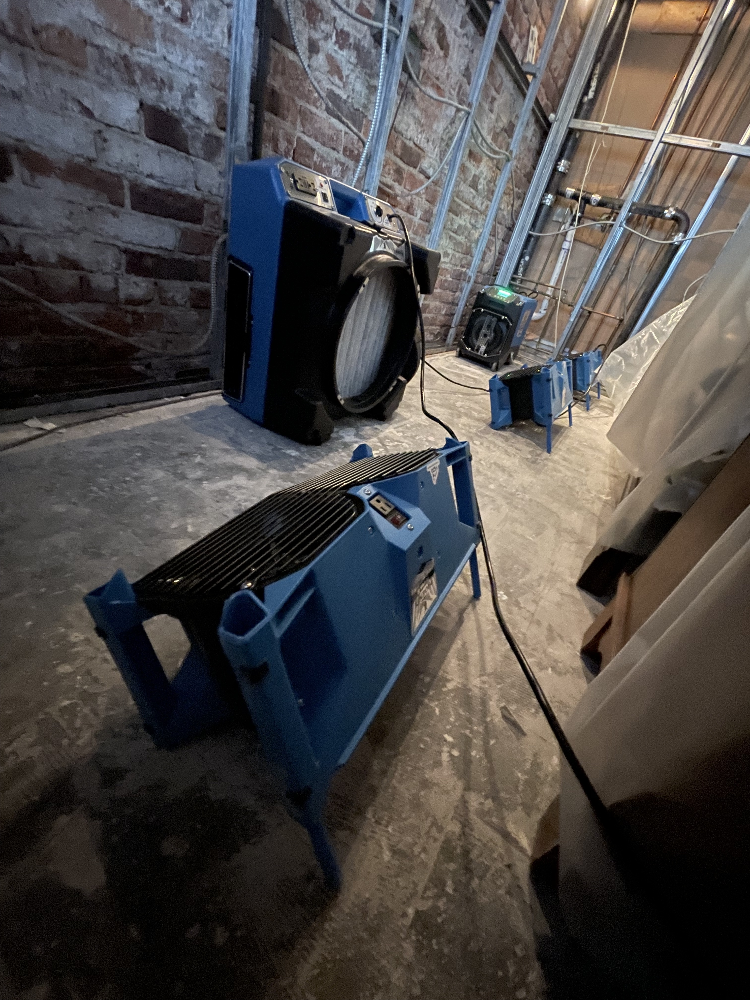
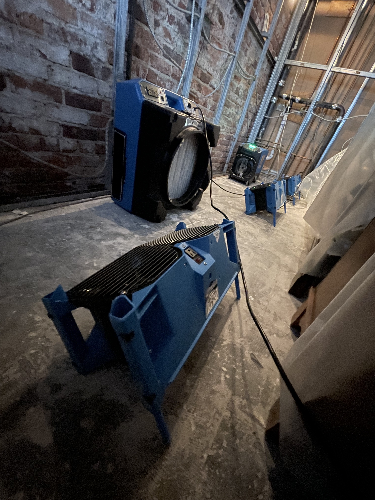

HomeDoc Restoration provides Long Island, NY with immediate responses,
24/7 free assessments,
and a team of IICRC certified professionals.
Call us today!

Whether it's your home or your business, HomeDoc's certified professionals have the experience and know how to deal with any type of water damage you encounter. Our responsive technicians work fast to ensure no further damage occurs, using top of the line equipment and cleaning methods to get you or your business back on track. Water damage is stressful, and you only have a small window of time to respond before mold begins to grow. Regardless of the extent of water damage, biological water contamination spreads quickly. Once your property has sustained water damaged, you don’t have the luxury of waiting for a convenient time to start the water mitigation and water damage cleanup. Water remediation should start within 24 hours to avoid secondary damage from mold and mildew that can present serious health risks to anyone living or working in your environment.